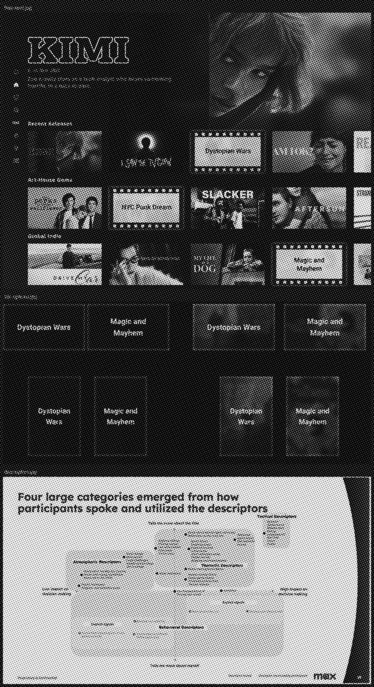
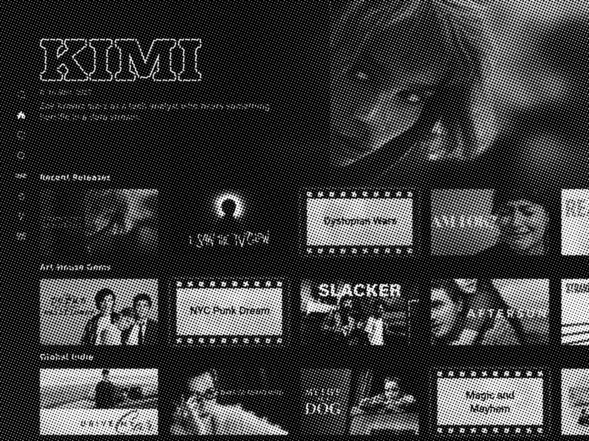
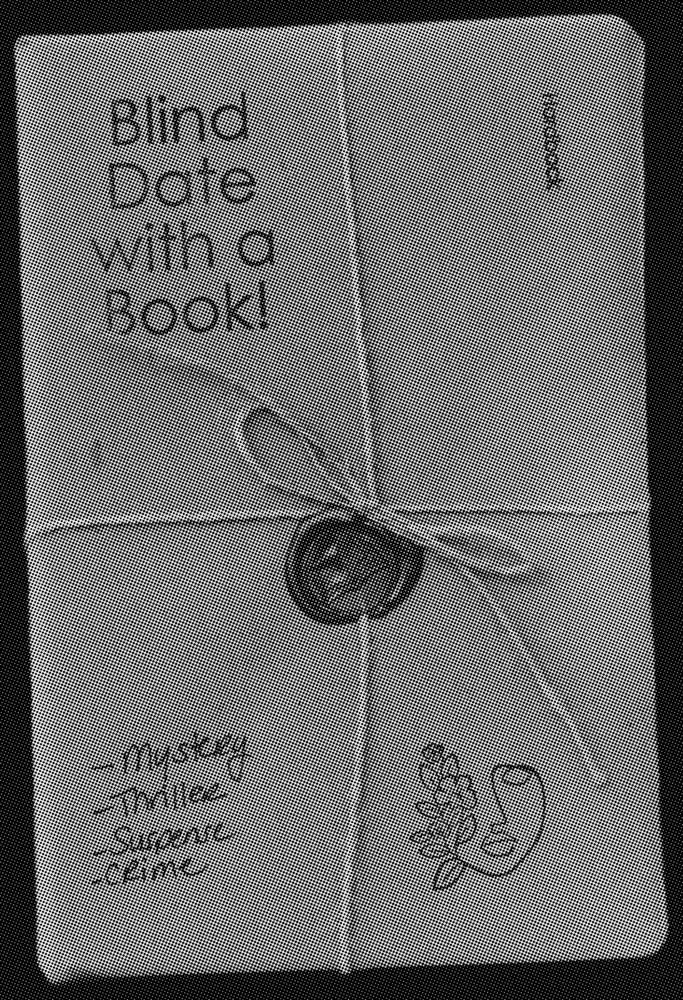

Only titles within the subpage category can get recommended. I changed the rail heading based on the subpage so users know to expect something different.
“Blind Date with a [theme]” was a name I was attached to. It landed with 18–25s, but was misunderstood by older viewers. They read it literally and expected a movie with dating involved.
Rejected: “Blind Date with a [theme].” It didn’t land for all ages. It overran the title’s fixed width and took up two lines, which was atypical in the app.
Chosen: “Surprise [theme].” Short and sweet. If you were on the Home page, you would see this as a general “Surprise For Me” rail.

Hidden tiles with clues on them. But what would they look like?
Rejected: Testing showed it broke people’s mental model. They couldn’t tell why titles were hidden. A skip-level review flagged the film-reel motif as overdone and not premium enough for HBO Max.
Chosen: One dedicated rail. One pattern to learn. Rest of browse stays familiar.

Rejected: Solid black. It was boring and gave no clue that anything was hidden.
Chosen: Frosted glass. Cause ya’ gotta tease a little. Testers could tell there was a title underneath. It was visually intriguing and borrowed design language of the HBO Max glass.
HBO Max had plenty to watch, but viewers still struggled to choose. Key art or a synopsis alone wasn’t enough. There needed to be a better reason to get users to stop scrolling.
I was walking through the Strand bookstore and saw a new display table: Blind Date with a Book. You don’t get the cover, but you get clues that let you say yes or no. I thought, “What if I could apply this idea to a rail?”
AI generates clues from three inputs: title metadata, the subpage it appears, and a copy guide with writing rules.
AI makes the idea scalable. Instead of writing every variation by hand, the system generates context-specific clues across the catalog.
The secret sauce is that the subpage indicates what the user wants. If the user is on the Comedy page, they want comedic themes. I adapted clues based on the user’s intent at time of browsing.